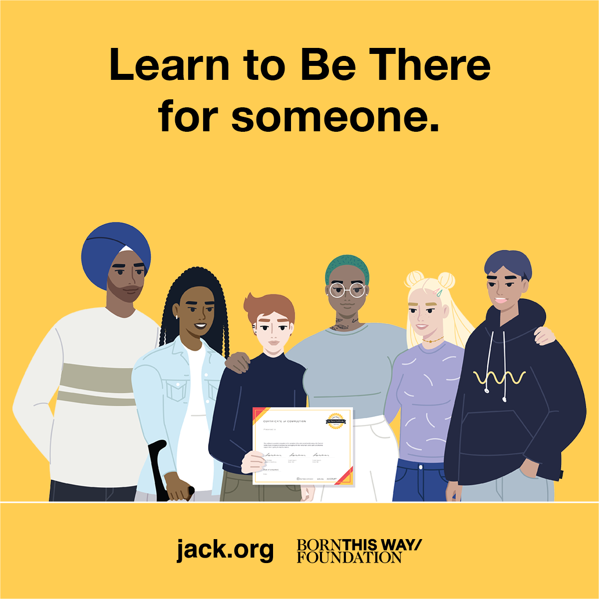
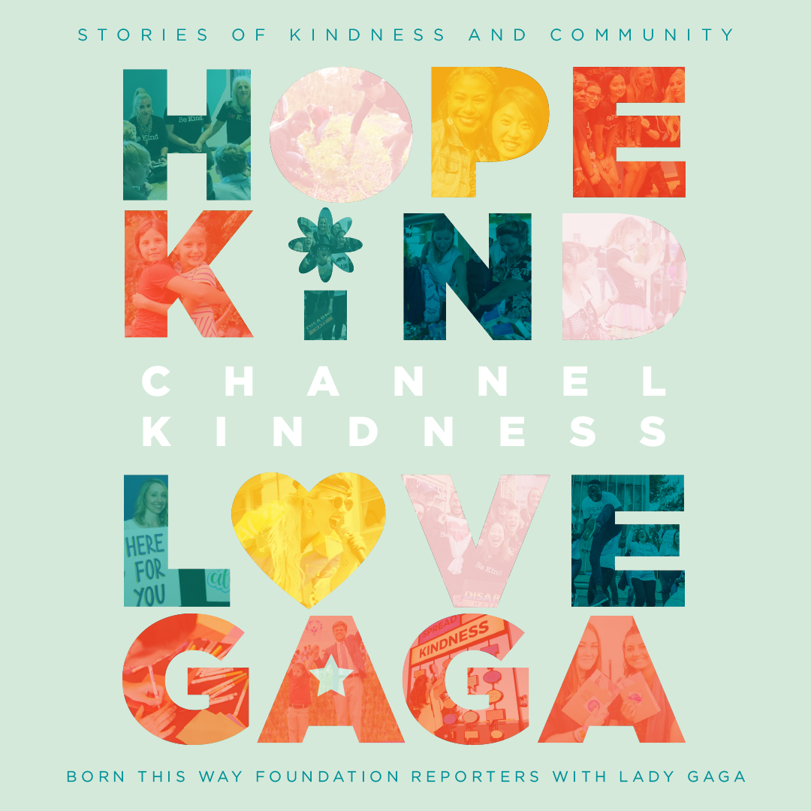

Born This Way Foundation’s mission is to empower and inspire young people to build a kinder, braver world that supports their mental health. Learn more about the impact of our work.
If you or a friend is struggling with mental health, please remember you matter, you are not alone, and there are resources for support available for you, including the resources listed below. For an international resource directory, visit: bekind.findahelpline.com.
Born This Way Foundation’s mission is to empower and inspire young people to build a kinder, braver world that supports their mental health. Learn more about the impact of our work.

Learn about and take the Be There Certificate, a free online mental health course, available in English, French, and Spanish, that offers a simple, actionable framework teaching people how to recognize when someone might be struggling, understand their role in supporting that person, and learn how to connect them to the help they need and deserve. The Be There Certificate is mental health education for all!
Learn about our programs and initiatives aimed at demonstrating the power of kindness to impact well-being, validating the emotions of young people everywhere, and eliminating the stigma surrounding mental health.

CHANNEL KINDNESS: Stories of Kindness and Community is a collection of inspirational stories written by young people as well as personal notes of empowerment from our co-founder Lady Gaga. Within these pages, you’ll meet young changemakers who found their inner strength, prevailed in the face of bullies, started their own social movements, and decided to break through the mental health stigma. These storytellers share how they felt, created safe spaces for LGBTQ+ youth, and embraced kindness with every fiber of their being by helping others without the expectation of anything in return. Order and learn more at channelkindness.org/book!